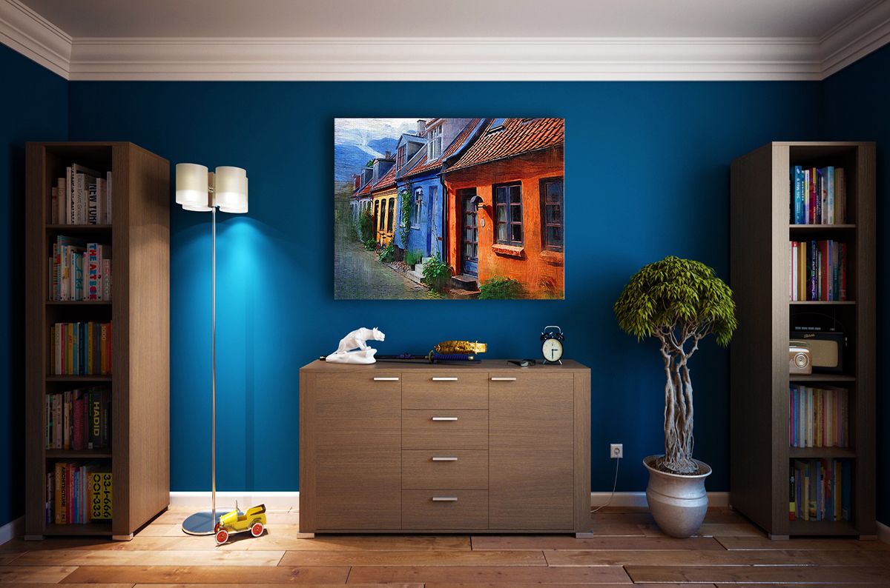
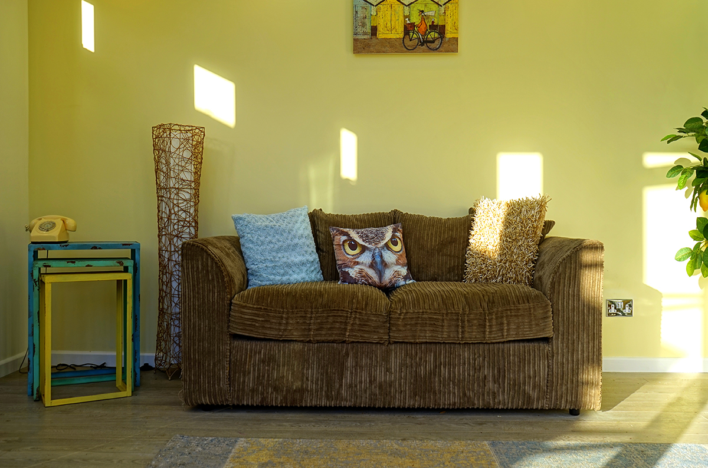
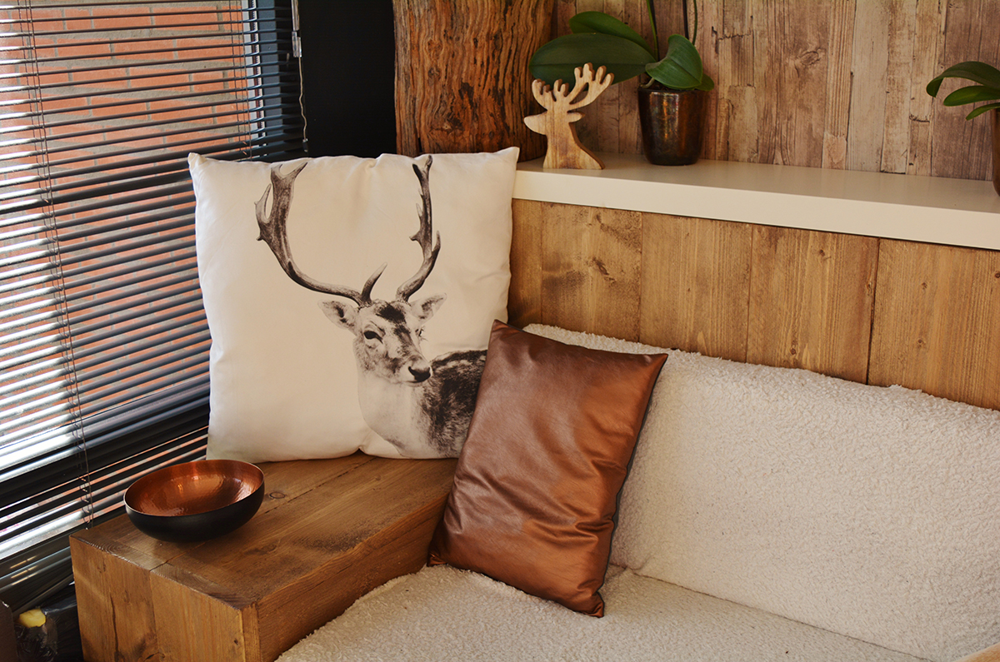
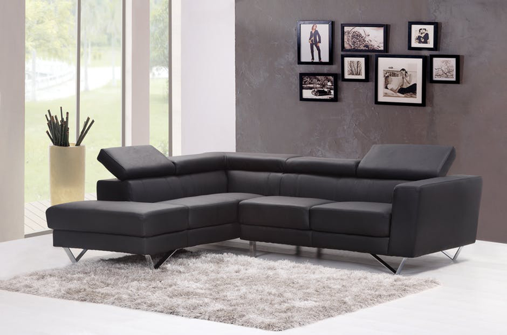
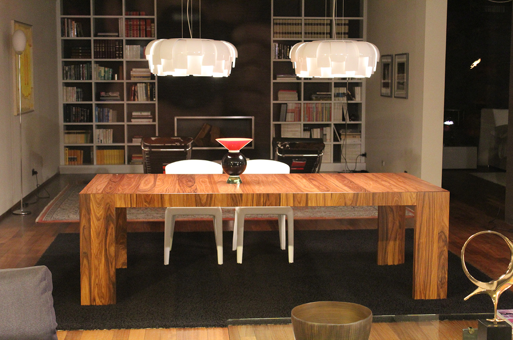

北欧风格以简洁著称于世,并影响到后来的“极简主义”、“简约主义”、“后现代”等风格。在20世纪风起云涌的“工业设计”浪潮中,北欧风格的简洁被推到顶峰。
北欧风格以简洁著称于世,并影响到后来的“极简主义”、“简约主义”、“后现代”等风格。在20世纪风起云涌的“工业设计”浪潮中,北欧家具以简约著称,具有很浓的后现代主义特色,注重流畅的线条设计,代表了一种时尚,回归自然,崇尚原木韵味,外加现代、实用、精美的艺术设计风格,正反映出 现代都市人进入新时代的某种取向与旋律。
在建筑室内设计方面,就是室内的顶、墙、地三个面,完全不用纹样和图案装饰,只用线条、色块来区分点缀。
在营造天人合一的自然气氛里,北欧人似乎有着不可替代的天赋。永远是材质的精挑细选,工艺的至纯至真手工艺,这种在现代工业社会被看作是活标本的技术,仍 然在北欧国家的设计中广泛使用。
黑与白是北欧的经典色彩,没有地中海风格大片的炫烂色彩,它专一的黑白引领着一 种类似时尚,却远离浮华的洒脱,让人觉得从容而自在。
北欧风格的住宅里，会大量的运用温润的木质元素。特别是实木板材来装修地面、墙壁、定制家具，突出北欧人喜欢原木的清新、自然味道，注意室内 居住环境的环保和健康。
